Turning installs into first bookings for a fitness subscription
FitNow gives one subscription to 250+ sport and wellness studios in Kyiv, but only 2 of every 100 people who installed the app reached a first booking. With a teammate, I researched how people really choose a class and redesigned the path from the first open to the first booking.
ActivationUX researchMobile appClient project
RoleProduct Designer · research, UX/UI
ClientFitNow, Kyiv · project at Projector
Team2 product designers · with Olena Polishchuk
TimelineMay — Aug 2026 · iOS & Android
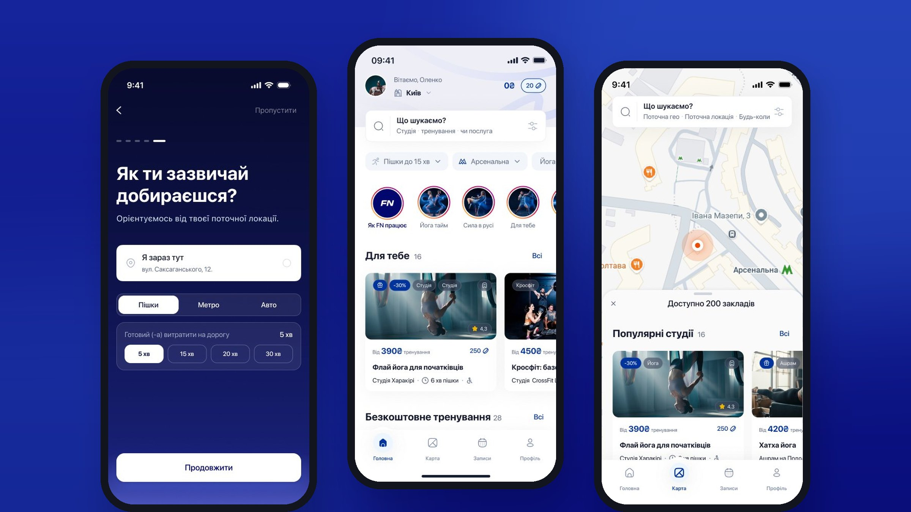
01
Context
FitNow is one subscription to 250+ sport and wellness studios in Kyiv. Instead of a membership to one gym, people get yoga today, boxing tomorrow and a pool on Sunday, booked in a few taps.
The app was live on iOS and Android with its first paying users and was moving to a new subscription model. FitNow brought us a real brief: rethink the path from the first app open to the first class booking. I worked on it with Olena Polishchuk, as a team of two product designers, from May to August 2026.
Competes withSingle-studio memberships, not one-off visits
AudienceKyiv residents 22–40 who pay for themselves, and parents choosing activities for kids
StageEarly traction, moving to a new monetization model
Product jobTake a new user from install to the first real studio visit, then build a habit
02
The challenge
Only 2 of every 100 people who installed FitNow reached a first booking. Acquisition worked and people did install the app. They left in the gap between install and first value, before they understood why one subscription beats a regular membership.
The onboarding carousel did not lead to a first action.
The app did not explain why it is better than a regular membership.
Push scenarios broke off and never brought users back.
A free trial class existed, but users learned about it too late.
Success metrics
2% → 15%install → first booking, current and target
↓time to the first booking
↑search → booking conversion
03
My role
We were two product designers and shared the project end to end, from the funnel audit to the client presentation. My part:
We walked the live app from splash to booking and mapped every screen. Several onboarding steps asked for data that gave the user nothing back at the start, such as gender and Instagram.
Splash
Sports offer
Subscription
Phone
SMS code
Interests
Name
Gender
Birth date
Instagram
Options → Home
No visible Book button on the schedule. People reached a class and stopped. Analytics showed a sharp drop in events right after the studio schedule view.
9+ identical cards in a row. The home feed listed classes with the same name one after another, with no sorting by interest or distance.
Points nobody understood. Users heard about points only in onboarding and had no reason to buy them before seeing the product.
From the walkthroughs
“Honestly, I didn't get why they need my Instagram. I already verified with my phone.”
05
How people really choose a class
In-depth interviews with adults choosing sport for themselves and with parents choosing activities for their kids, synthesised with an affinity map, customer journey maps and an opportunity solution tree.
16in-depth interviews
2audience segments
5behavioural groups
8hypotheses ranked with ICE
Location comes first. People pick a studio by route, and the route has several anchors: home, work, a kindergarten. → saved anchor points
Google Maps is the learned way to search. FitNow asked people to fill Where and When as separate steps. → map as the search entry point
The schedule decides. A great studio at the wrong time is a dead end. → sorting by schedule match
Nobody wants to start alone. Adults feel safer with friends; kids go where their friends go. → invite a friend
Price has to be obvious. Points hid the real cost; people wanted prices and balance in hryvnias. → pricing in UAH, bonuses as a reward
Segments
A · In this releaseTrains offline, chooses for self. Location, schedule, price, atmosphere. Needs a clear price per class and a visible balance.
B · In this releaseChooses for a child. Safety, trainer, age fit, schedule. Needs search near saved addresses like home or a kindergarten.
C · FuturePrefers online training. Not interviewed directly; extrapolated from external data. Left as a future opportunity.
06
8 ideas, 3 bets
Every hypothesis had to remove one concrete barrier between install and the first booking. We ranked eight ideas with ICE and took three into design and testing.
Hypothesis 01
Onboarding that pays back every answer
Based on
11 steps from splash to home; gender and Instagram gave nothing back at the start.
We believe
Asking only what improves the first results (who it is for, interests, where, how you travel) and opening a personalised home will lead more people to a first booking.
Right if
Onboarding completion grows and more installs reach a first booking.
Hypothesis 02
The map is the search
Based on
Both segments already search on a map and choose by route and schedule fit.
We believe
If a saved anchor address exists, the map opens with studios sorted by distance from it and by schedule match. Manual Where and When stay for anyone who wants them.
Right if
Time to booking goes down and search → booking conversion goes up.
Hypothesis 03
Bring a friend to the same class
Based on
People start and keep training more easily with friends; kids go where their friends go.
We believe
Inviting a friend to the same class with one link, with bonuses for both, will grow first bookings from invited users.
Right if
Invited users grow, book a first class and come back for repeat visits.
07
Solution
01 · Five questions, each one changes the first screen
The first screen states the offer. Then: who it is for (me, my child or both), interests, where, and how you travel. People think in minutes, not kilometres, so travel mode and time replace an abstract radius. The answers reorder the home feed, and free trainings get their own row, so the activation hook is on screen one.
Value first. The offer in one sentence.Who it is for. Kids get their own path.
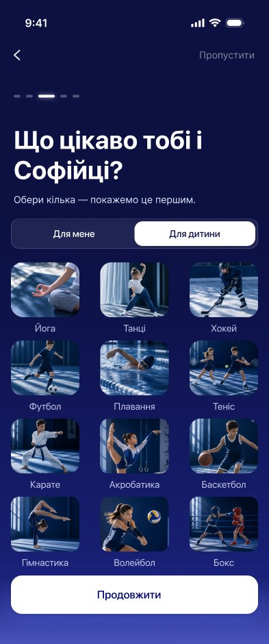
Interests. Picks reorder the feed.Where. Location, metro or district.
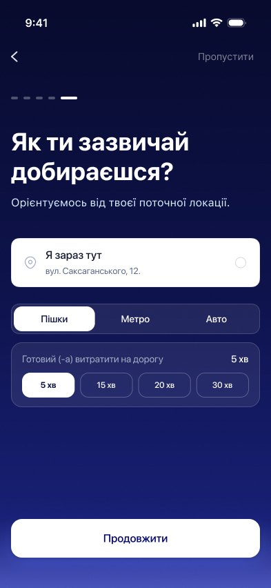
How you travel. Minutes, not kilometres.
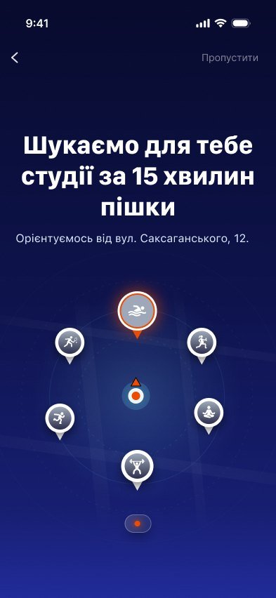
Search. The answers echoed back.
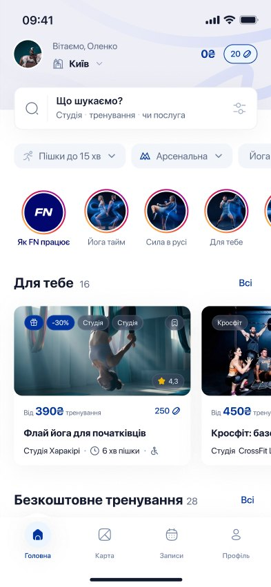
Home. A feed that already knows you.
02 · The map is the search
Route and schedule become one entry point. Before: open search, choose What, Where and When, then read a list, five steps to a result. After: the map opens already sorted around the user's saved places and free time.
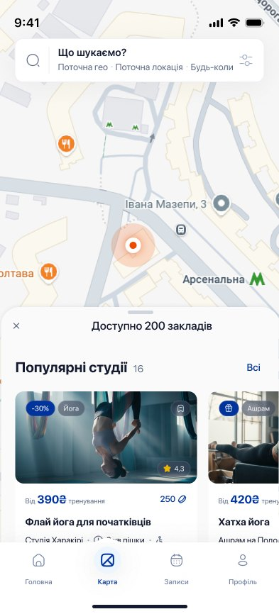
Map. Results on open, sorted by anchor and schedule.
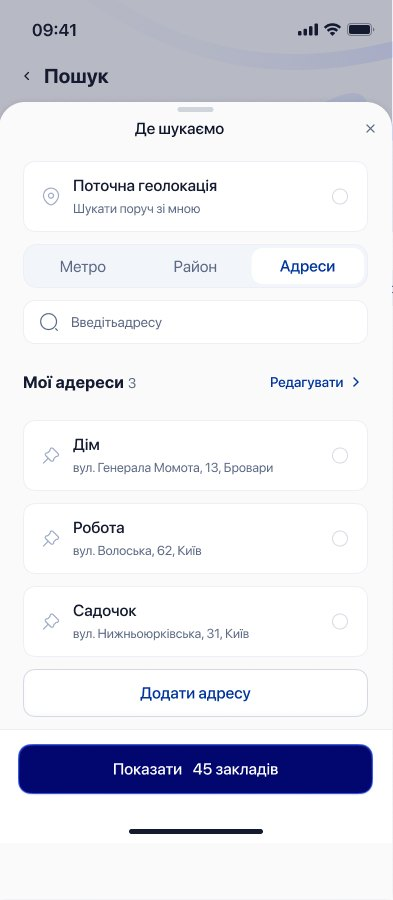
Anchor addresses. Home, work, a kindergarten.
03 · Bring a friend to the same class
One link invites a friend to the exact class from the class page. After a successful invite, both get +20 bonuses.
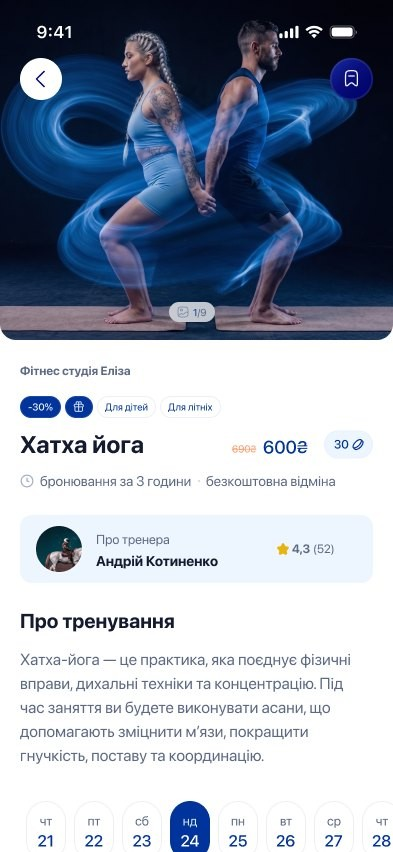
01 Invite from the class page
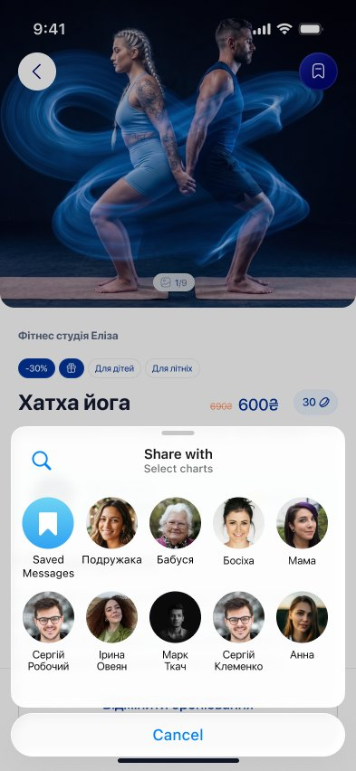
02 Share one link
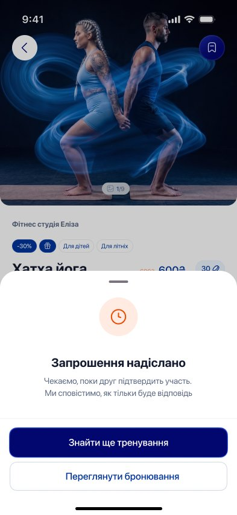
03 Wait for the reply
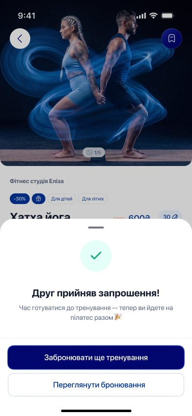
04 Friend joins the class05 Both get +20 bonuses
A system the team can ship
The brand stayed as the brief required. The screens got a cleaned-up UI kit, which I then turned into a design system for handoff: three layers of tokens (primitives → semantic → components), 21 text styles instead of 40+, and atoms, molecules and organisms with their states.
Brand#02066F · pressed #00349C · bonus #ED4B00
Icons100+ line icons, 20 px
Inputs & code input6 states each
Buttons3 types · 2 sizes · 3 states
CardsStudio, class, event, plan
08
Testing and outcome
We tested the three flows on a clickable prototype with respondents from both segments, following a test plan and a discussion guide.
20usability sessions
3flows tested: onboarding, map, invite
Aug 31client presentation and handoff
We handed FitNow the flows, the UI kit and the metrics to track for each hypothesis: onboarding completion, time to booking, search → booking conversion, and invites sent and accepted. The activation result (2% → 15% target) will be measured by the FitNow team after release.
09
What I learned and what comes next
Every question in onboarding has to pay the user back. If an answer does not change what people see next, it is a reason to leave.
Copy the way people already search. A map and a route felt natural because that is how people already look for a gym.
Next
Retention. Push scenarios that follow the first visit and bring the user back for a second class.
Subscription. S, M and L plans priced in UAH with a 7-day trial, so the price is clear before the first payment.
Segment C. Online formats for people who prefer to train at home.